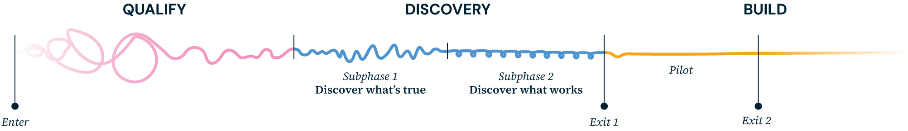

3.1 The Shape of Engagement
Partnership is how we work. Agencies bring the domain knowledge and the mandate; GTC designers bring discovery capability, technology, and product expertise. Together, we build something that creates real impact for the public. Below shows where our partnership begins and ends, and why both points matter.

This diagram only shows where GTC designers enter and exit an engagement cycle.
Where we enter
The earlier we’re brought in to help shape the problem, the more value the work creates. If the direction is already locked, the scope fixed without discovery, or the agency already committed to a specific build, our ability to help agency partners solve core issues drops significantly. Wherever we enter, we tell agencies what’s still achievable from that point, so both sides begin with a shared, realistic picture of what’s possible.
Where we exit
We don’t leave teams hanging. Our intention is always to build up the agency’s own capability to carry the work forward, and that transfer of ownership starts on day one, not at the handover line. We typically step away at one of two natural exit points:
Exit Option A — Entry of build and delivery
GTC designers hand off after the initial pilot phase, having helped agencies build key features of the final solution. To support the next steps of production, we provide the necessary artefacts and documentation. Other GTC team members may step in here to support agency partners with capability building. (See 4.3: Building and Delivery; 3.3: Building Lasting Capability.)
Exit Option B — End of build and delivery
GTC designers stay through the actual build and launch, stepping away only when the service is live and the agency team is fully equipped to run it independently. (See 4.3: Building and Delivery.)

3.2 The Work We Build On
Types of engagement we take on
Our work starts with two conditions: (1) a problem worth solving, and (2) a partner ready to work alongside us to solve it. Before committing to an engagement, we work together to understand the engagement landscape — whether the budget is secured, what it covers, and whether it aligns with the proposed scope. Surfacing this early builds the transparency that makes for a productive partnership. (See 4.1: Qualifying.)
Legacy system overhaul. An agency’s legacy system is failing both users and officers.
- Discover what is actually broken.
- Map the full service.
- Prototype what an improved version could look like.
Digital policy validation. A ministry wants to understand whether a new policy can be delivered digitally.
- Run discovery to validate the need.
- Surface the constraints.
- Experiment with what a service could be before any build commitment is made.
System & operational consolidation. An agency is streamlining multiple fragmented systems into a single platform, requiring entirely new internal workflows.
- Discover to rethink the people, process, and workflows around it.
- Rebuild the operation alongside the new platform.
What we don’t do
We work as an advisory partner, not as a permanent vendor or an ongoing operational arm. Our goal is to build capabilities that outlast us (more on that in 3.3: Building Lasting Capability). To protect that focus, here’s a quick look at what’s in and out of scope:
Take over the entire engagement cycle. We are a consulting and discovery team, not the permanent design or engineering function for an agency.
Accelerate, enable, and pilot solutions. We focus on the discovery arc, building proofs of concept and value (POC/POV) before handing over to our agency partner’s engineering team.
Write funding papers or investment proposals. This includes IB papers, procurement documents, and the like.
Inform strategic thinking. We provide the foundational insights and data that help an agency shape and back up their internal case.
Design without being involved in the discovery. If a solution has already been decided and we’re asked only to make it look good, that isn’t an engagement we can add real value to.
Design based on discovery insights. We ensure our design is deeply connected to user research, constraints, and verified needs. (See 2.3: Through a Discovery Lens.)
Run isolated research tasks without a discovery arc. We are not a research-for-hire team delivering standalone tasks; research has to connect to discovery, hypothesis, and action.
Connect research to clear next steps. We ensure every research piece connects to a full discovery arc with clear hypothesis, validated findings, and tangible action. (See 2.3 and 4.2.)
Deliver a prototype and walk away. We don’t leave partners without roadmaps or context in the handoff.
Build capability for the next step forward. We guide partners to solve the right problems and set up an environment to maintain the work after we leave. (See 3.3: Building Lasting Capability.)
3.3 Building Lasting Capability
We measure our success not by the solutions we leave behind, but by the people who carry them forward. Ownership sits with our agency partners; they hold deep domain knowledge and the long-term stakes in the engagement’s success. Beyond helping agencies fill immediate skill gaps early on, our role is to cultivate the structures, tools, and talent necessary for this work to survive — and keep improving — long after we are gone.
Capacity only grows under the right conditions. For the work to sustain itself, three things need to come from the agency side:
- A clearly identified business owner — someone accountable for the outcome.
- A sponsor with decision-making authority — someone who can clear the path when it matters.
- A shared sense of what success looks like — agreed between us, and early.
Two tracks of capability building
There are two agency teams that we help grow, and they run in parallel alongside the engagement:
- The product team — the people who design, build, and iterate on the service.
- The operations team — the people who run and sustain it once it’s live.
Capability building shown as a parallel track that starts on day one and runs the full length of the engagement, with two sub-tracks inside it: the product team and the operations team.
The product teamThe people who design, build, and iterate on the service
The long-term value of an engagement is rooted in building the right product team from within the agency. When we look for the people, we look for:
- Mindset fit — genuine curiosity about the problem, openness to new ways of working, and a collaborative instinct that makes co-creation possible.
- Readiness to evolve — a willingness to grow with the work, picking up new methods and adapting as technology reshapes what design can do.
- Domain knowledge — an understanding of the agency’s context, systems, and users that’s hard to bring in from outside.
- Potential for ownership — the capacity and ambition to eventually lead the work, not just contribute to it.
There are two ways to build this team, and we have a clear preference:
Up-skilling current staff into design, product, or engineering roles retains invaluable domain context. Involving them early means capability builds naturally alongside the engagement. The earlier these conversations start — clearing BAU bandwidth and securing approvals — the smoother the path.
When existing staff can’t be redeployed, fresh talent is an opportunity to build the exact capabilities the engagement needs. To ensure readiness, align early on manpower options — whether navigating MMF allocations, hiring contractors, or securing a longer-term GovTech commitment.
The operations teamThe people who run and sustain it once it’s live
A project’s success ultimately depends on the team running it after launch — the people maintaining, administering, and reviewing performance day to day. Unlike building a traditional product team, new roles may be introduced to fill this operational layer, making structured change management all the more important.
Sustaining this team means working through team structure, funding, hiring, and potential vendor partnerships early. Above all, leadership must clearly define the organisation’s long-term commitment once GTC’s direct involvement ends.